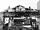

Pula Observatory
Astronomical Society "Istra" Pula
✕
🏠 Home
📅 Activities
🖼️ Gallery
📜 History
🔭 Visit Us
📚 Papers
⚙️ Services
⬇️ Downloads
ℹ️ About Us
Login
HR
History of the
Observatory
Explore the rich history and heritage of Pula Observatory

Pula Observatory in the Past
Naval Library
Old Instruments
Historical
Figures
Astronomer Johann Palisa
Astronomer Ivo Benko von Boinik
Vice Admiral Wilhelm von Tegetthoff
Login
Enter your credentials
Username
Password
Login
Cancel